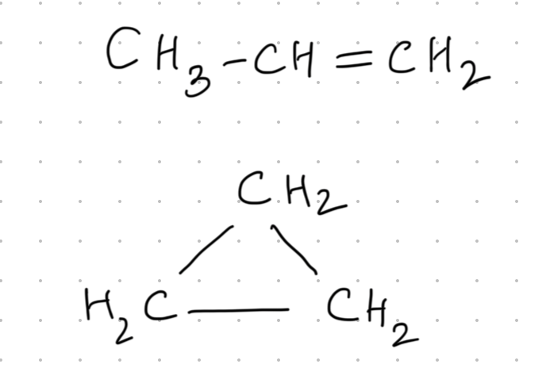
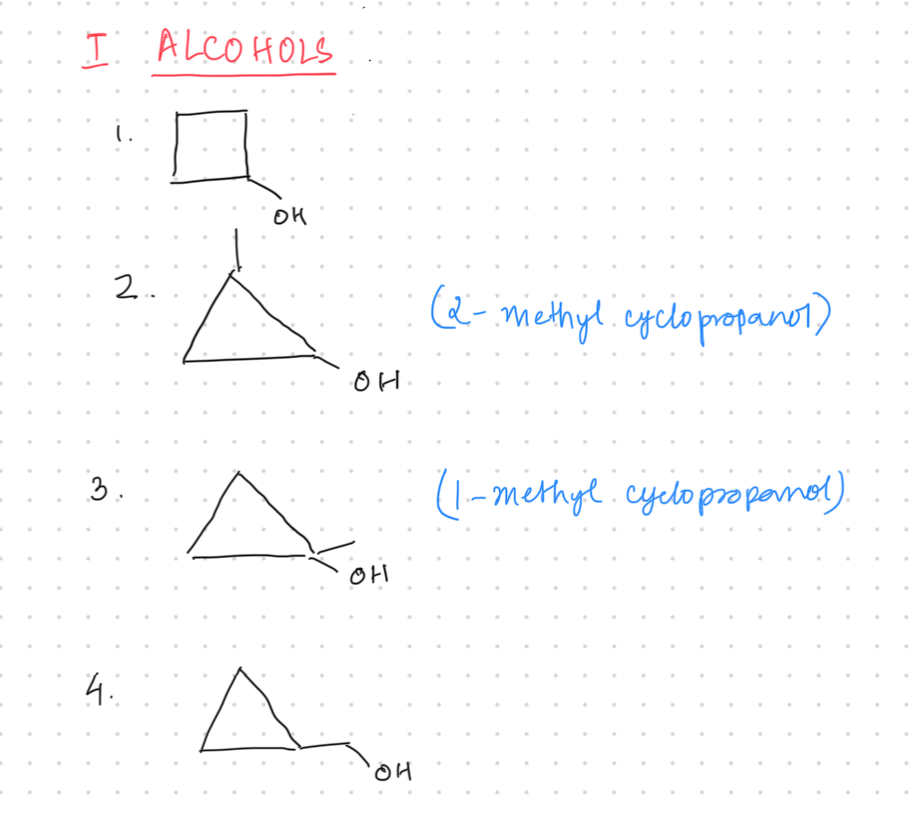

In this chapter, we will learn how to draw all possible
structural isomers.
Example: draw all structural isomers of
\(\left(C_3H_6O\right)\).
Structural isomerism to be covered:
Chain isomerism
Position isomerism
Functional isomerism
Metamerism
Tautomerism
Ring–chain isomerism
If the concept of DBE (double bond equivalent) is clear, then by
just looking at a molecular formula, you can immediately
understand what kinds of structures are possible.
For the formula \(\left(C_3H_6O\right)\), seeing oxygen suggests
possible functional groups:
Alcohol
Aldehyde
Ketone
Ether
Carboxylic acid is not possible because it requires two oxygen
atoms.
Ester is also not possible for the same reason (two oxygen).
So, alcohol, ether, aldehyde, and ketone are possible.
Aldehydes and ketones require a double bond
\(\left(C=O\right)\).
From the molecular formula alone, it is not immediately
clear whether a double bond is present.
Here, the double bond equivalent (DBE) expression is very
useful, as it tells how many double bonds can exist inside the
compound.
Using DBE, we can also determine whether a cyclic structure is
possible, and if so, what kind of cyclic structure can be
formed.
All these ideas will be taught step by step in sequence.
If we know whether this compound contains a double bond
or not, it becomes very helpful in making isomers.
Also, whether a cyclic structure is possible or not.
Let’s calculate its DBE:
Number of carbons \(= 3\)
Hydrogen \(= 6 \Rightarrow \frac{6}{2}\)
Nitrogen \(= 0\)
\(\text{DBE} = 3 - 3 + 1 = 1\)
If a compound has \(\text{DBE} = 1\), it means:
it can have one double bond, or
it can have one ring.
One double bond is equivalent to one ring.
So either:
make a straight chain and add one double bond, or
make a ring.

For \(\left(C_3H_6\right)\): make a 3-carbon chain and
place one double bond, then add hydrogens and check the
count → it fits \(\left(C_3H_6\right)\).
A 3-carbon ring is also possible (rings smaller than 3
carbons are not possible). Complete valencies, count
hydrogens → \(\left(C_3H_6\right)\).
Therefore, the number of structural isomers possible for
\(\left(C_3H_6\right)\) is 2.
No other distinct structure is possible here.
Shifting the double bond position does not create a
new isomer in a 3-carbon chain (it will still be the
same compound by numbering).
\(\text{DBE} = C - \frac{H}{2} + \frac{N}{2} + 1\)
\(C = 4,\ H = 8 \Rightarrow \frac{8}{2}=4,\ N=0\)
\(\text{DBE} = 4 - 4 + 1 = 1\)
DBE \(=1\) means:
either one double bond, or
one ring.
Cyclic alcohols (only cyclic alcohols are asked):
Make a 4-membered ring alcohol: 4-carbon ring +
\(\mathrm{OH}\).
Since a 4-membered ring is possible, a 3-membered
ring is also possible:
3-carbon ring + \(\mathrm{OH}\), and the
remaining 1 carbon as a branch.
Also possible: carbon outside and alcohol outside
(as explained) — total cyclic alcohol structures
become 4.
Summary statement from lecture: one 4-carbon ring
case, and three 3-carbon ring variants (by changing
the branching/placement) \(\Rightarrow 4\) alcohols.

x = 4
Cyclic ethers:
Ether means oxygen is between carbon atoms
(\(\mathrm{C-O-C}\)).
Start building cyclic ether rings and then introduce
branching/position changes (as shown).